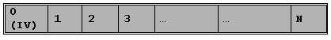

AES Overview
1 Introduction
AES decryption add-on for APOXI is intended to provide decryption of AES encrypted data using 128 bit keys and cipher block size of 16 bytes. Currently only Cipher Block Chaining (CBC) mode of AES is supported. These are the requirements for OMA DRM V1.0 which is supported by DRM Add On for APOXI.
2 Architecture
AES for APOXI is based on the free implementation of the AES algorithm in C++ by Prof. Brian Gladman (http://fp.gladman.plus.com/cryptography_technology/rijndael/). Basic algorithm is used by the APOXI implementation to provide CBC mode.
3 Features
The main features of AES are given in the following list:
4 AesCrypt Interface
AesCrypt is the class that offers the API to decrypt AES encrypted data. The API to be used is:
INT DECRYPTBUFFER(CONST BYTE* IN, BYTE* OUT,UINT BUF_LEN, PADDINGMETHOD PAD_METHOD,UINT START_BLOCK=0, UINT END_BLOCK=0);
To decrypt a buffer encrypted using AES, you need the following:
For further details refer to the following block concept in AES
4.1 AES Block concept
To use the API, the block numbers are calculated as follows:
Incoming buffer:
 |
In the figure, block 0 of the incoming buffer is the Initialization Vector (IV), hence it will not be used as cipher text. Block 1 in the incoming buffer is used as block 0 of the cipher text. The start_block and end_block can have values from 0 to (n-1). And the output buffer will have [end_block - start_block] number of blocks.